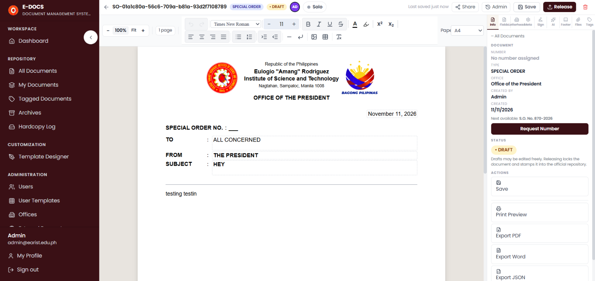

01 / 03
E-Docs
Electronic document tracking for official correspondence, approvals, and institutional records.
Outcome Clearer routing, review, and release preparation for official documents.
My contribution Architecture, development, QA, and technical documentation.